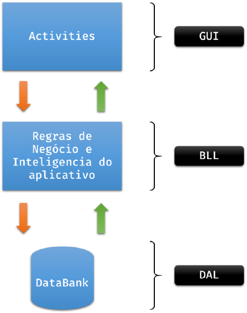
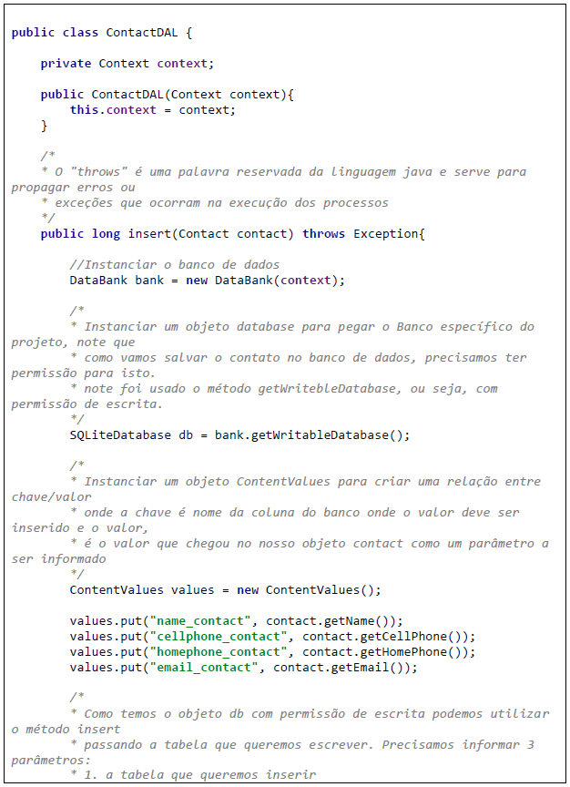
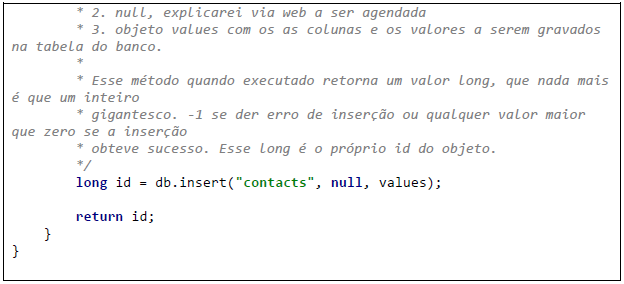
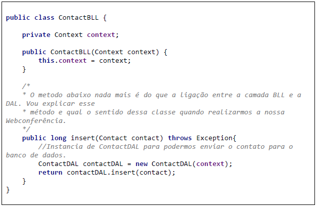

O banco de dados é um arquivo, conforme vimos no material Banco de Dados – Parte I, e para que nosso código fonte implemente um mínimo de segurança e organização devemos obedecer a uma hierarquia de acesso. As requisições de inserção, deleção ou update não devem ser realizadas diretamente nas activities, que são as Interfaces Gráficas do nosso App, elas devem seguir um fluxo através do nosso empacotamento, saindo da GUI para a BLL e da BLL para a DAL e vice-versa. A figura 1 ilustra esse fluxo entre as camadas.

Como podemos observar, GUI não tem ligação direta com a DAL, nem tão pouco a DAL tem ligação direta com a GUI, mas essas restrições, são de responsabilidade do programador, por isso a importância dos padrões de projeto. Para isso teremos de criar Classes que representam as regras de negócio, restrições e inteligência dos contatos e Classes que representam as operações em nível de banco dos contatos. São elas:
Como criar uma classe java já é sabido por nós, caso ainda reste dúvida, consulte o material Banco de Dados – Parte III. Para criarmos a classe ContactDAL, como o nome já diz, essa classe deve ser guardada no pacote DAL. Abaixo o código a ser implementado:


Como criar uma classe java já é sabido por nós, caso ainda reste dúvida, consulte o material Banco de Dados – Parte III. Para criarmos a classe ContactBLL, como o nome já diz, essa classe deve ser guardada no pacote BLL. Abaixo o código a ser implementado:
